Inhoud
- Probleemstelling: introductie tot interoperabiliteit
- Linked Data: betekenis, URI's en relaties begrijpen
- Standaarden: bestaande modellen leren kennen
- Voorbeelden
- Vervolgstappen: uitdagingen afwegen
Waarom deze workshop?
Vlaanderen is een van de overheden die het meest inzet op interoperabiliteit. Maar ...
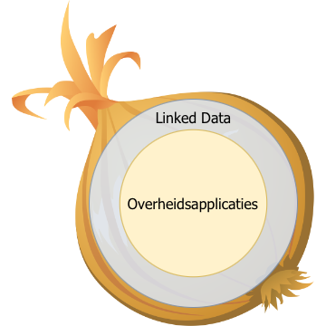
Waarom deze workshop? ...
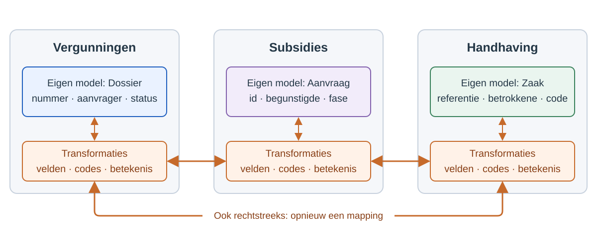
Probleemstelling
"Wat is een smartphone?"
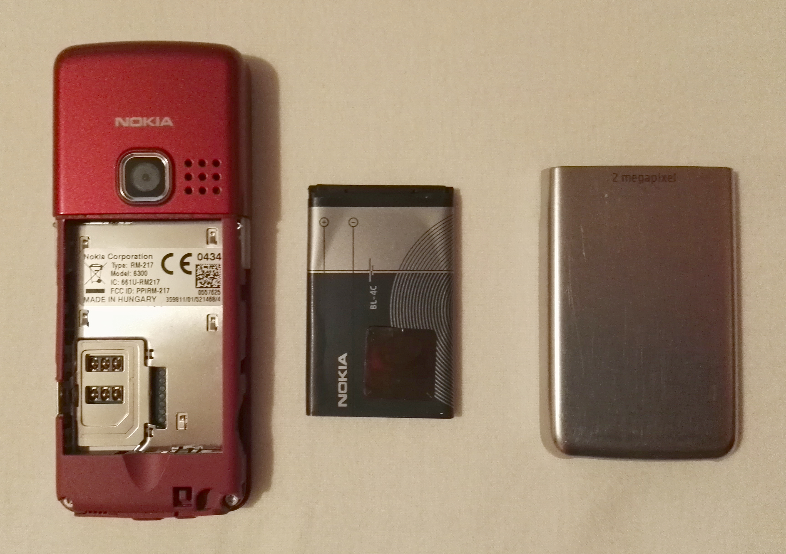
GSM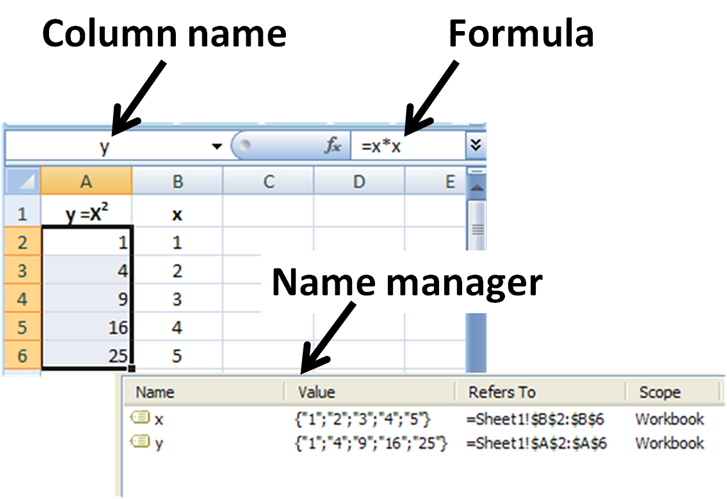
ProgrammaEen gsm waar je programma's op kan draaien
Probleemstelling
"Wat is een gsm?", "Wat is een programma?"
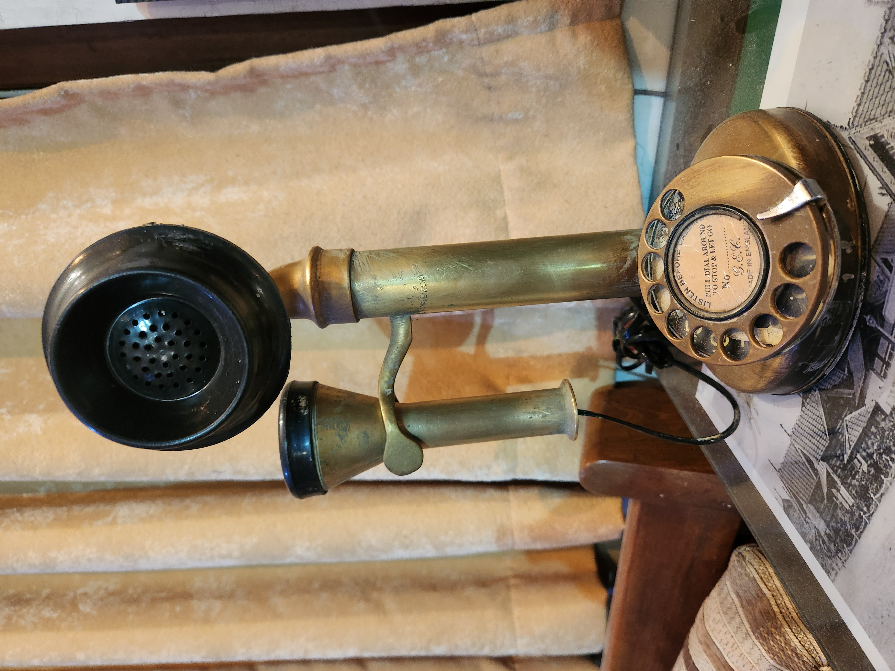
Een gsm is een draadloze telefoon, ...
Probleemstelling
Drift in betekenis
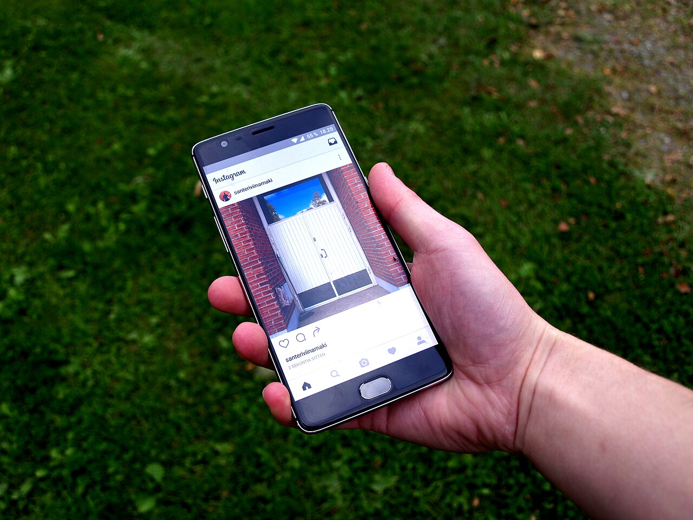
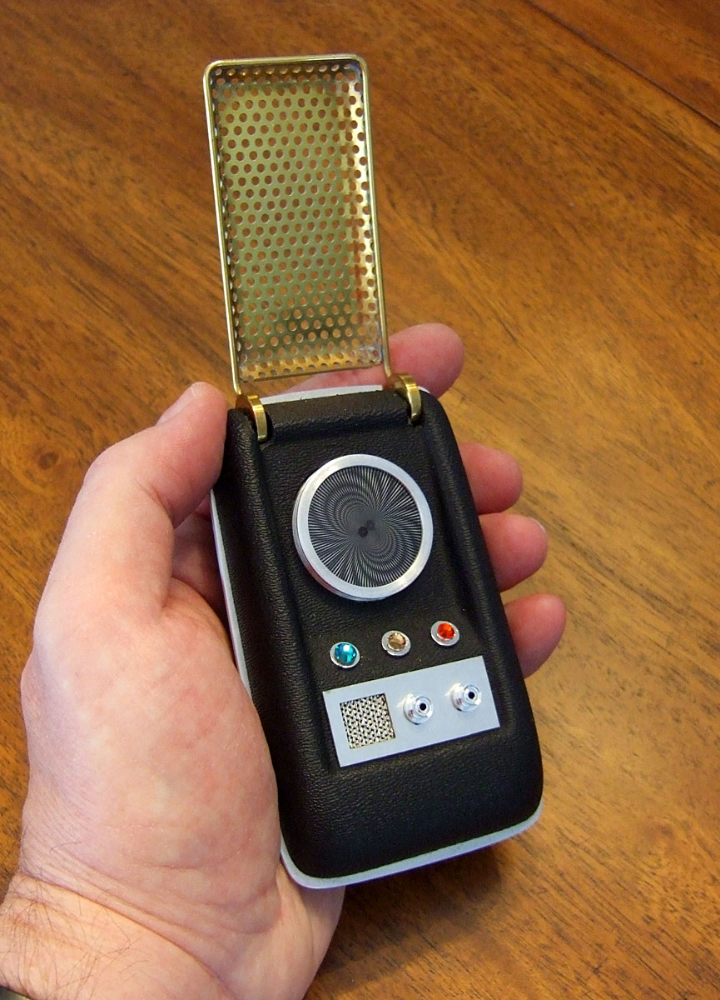
Probleemstelling
Verschillen bij overheidsapplicaties
Over verschillende beleidsdomeinen, toepassingen en regelgevingen heen worden gelijknamige termen gebruikt met een verschillende betekenis.
v.b. stamdossier, aangifte, dossier, basisdossier, ...
Probleemstelling
AI-gebruik
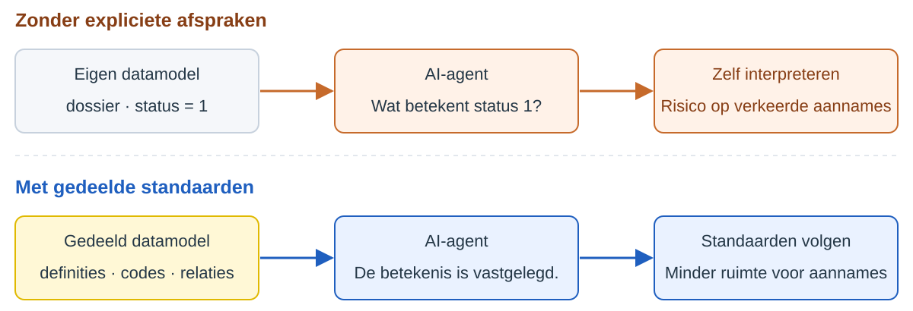
Interoperabiliteit
Interoperabiliteit is het vermogen van verschillende computersystemen of programma's om naadloos informatie uit te wisselen op een manier die toegankelijk, leesbaar en begrijpelijk is voor andere systemen.
Of samengevat: een uniforme en gestandaardiseerde manier van informatieuitwisseling
Interoperabiliteit
Toegankelijkheid
Het moet voor een agentschap of departement, of in sommige gevallen eindgebruikers mogelijk en duidelijk zijn hoe ze toegang krijgen tot data.
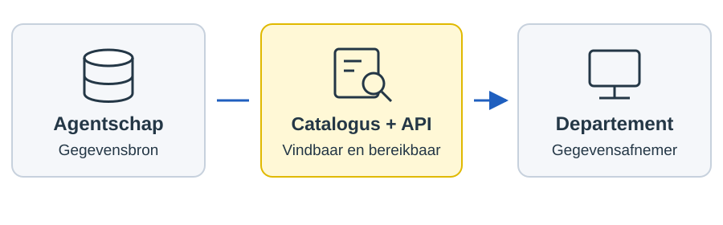
Interoperabiliteit
Leesbaarheid
Het formaat moet voor iedereen leesbaar zijn en bij voorkeur gebaseerd zijn op algemeen gebruikte standaarden.
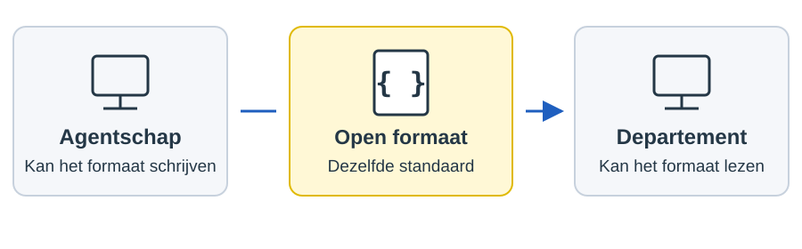
Interoperabiliteit
Begrijpelijk
Er mag geen betekenis verloren gaan in de vertaling.
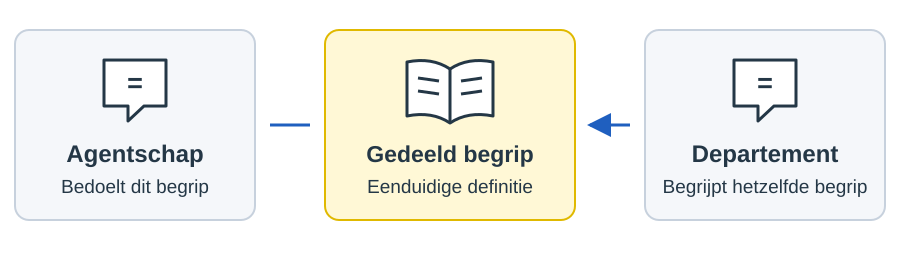
Interoperabiliteit
Waarom een handleiding (alleen) niet werkt
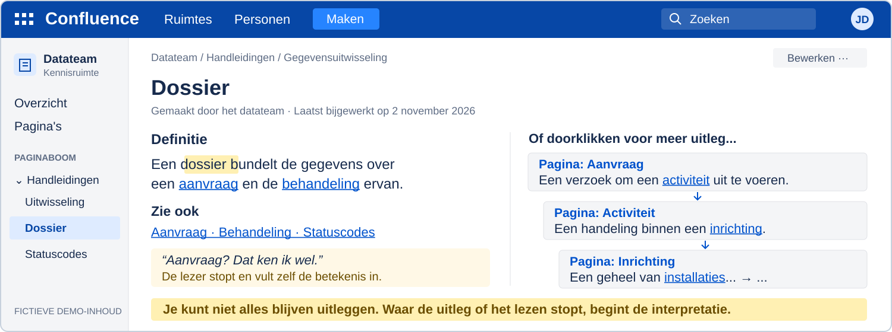
Interoperabiliteit
Standaardisaties
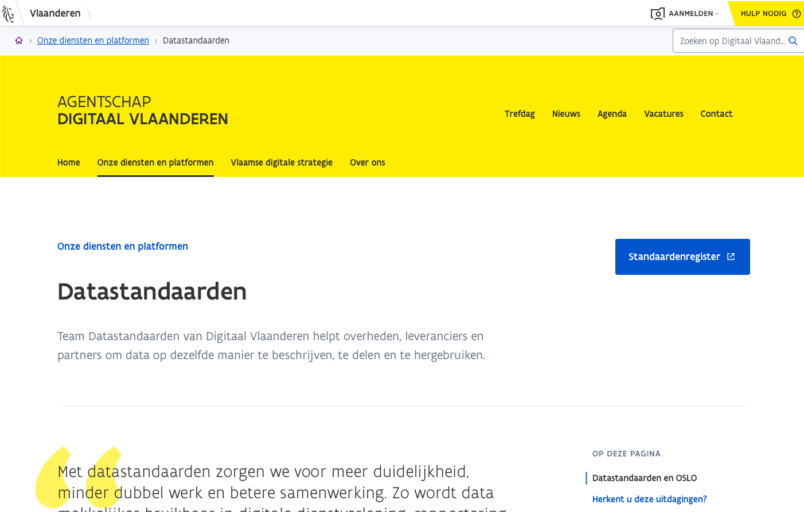
Linked Data
Wat is Linked (Open) Data (LOD)?

Linked Data
RDF (Resource Description Framework)
Data voorgesteld als triples: Subject, Predicate en Object
Linked Data
RDF (Resource Description Framework)
URI identificeert gelijke concepten
Anders dan JSON, Spreadsheet, database waar elke kolom een stukje tekst is
Linked Data
RDF (Resource Description Framework)
Subjects worden beschreven met predicates die naar objecten verwijzen
Linked Data
RDF (Resource Description Framework)
CURIE (Compact URI) geeft prefixes aan een URI
Linked Data
RDF (Resource Description Framework)
Niet atomaire objecten kunnen op zichzelf ook subject zijn
Linked Data
RDF (Resource Description Framework)
Predicates kunnen op hun beurt elders beschreven worden
Linked Data
Een web van informatie, gelinkt aan data ...
Linked Data
... en standaarden
Linked Data
Voorbeeld
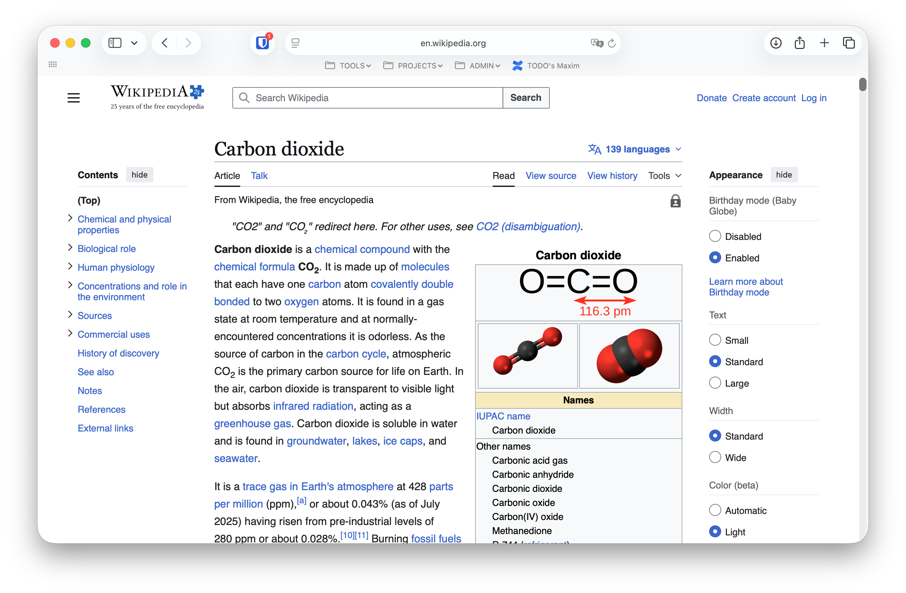
Linked Data
Voorbeeld

Standardisaties en modellen
Silo's doorbreken
- Een verkeerstelling, een schooldoorlichting, een premieaanvraag, een EPC, een erkenning, een vergunning, een subsidie, ...
- Elk agentschap, elke toepassing krijgt een eigen datamodel
- Gelijkaardige patronen: wie, wat, wanneer, waarover?
Standardisaties en modellen
Vocabularium, ontologie, knowledge graph
Vocabularium
Een herbruikbare verzameling termen met URI's en definities.
Ontologie
Een ontologie legt ook formele relaties en axioma's vast.
Knowledge graph
Een graaf van entiteiten en relaties die kennis representeert.
Standardisaties en modellen
Ontologie klassen als blauwdruk
Standardisaties en modellen
Ontologie als blauwdruk ...
Requirement wijzigt waarbij een installatie meerdere apparaten kan hebben
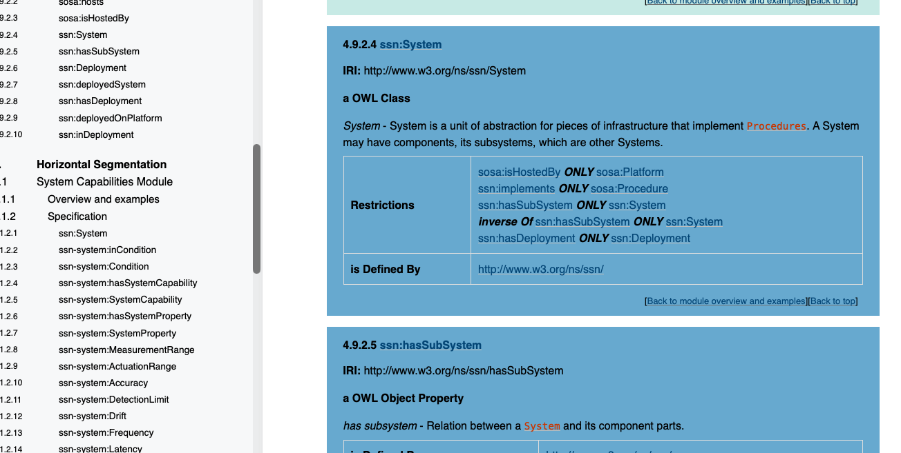
Standardisaties en modellen
Ontologie klassen als blauwdruk ...
Requirement wijzigt waarbij een installatie meerdere apparaten kan hebben
Standardisaties en modellen
Ontologie klassen als blauwdruk ...
Requirement wijzigt waarbij een apparaat en installatie hetzelfde zijn
Standardisaties en modellen
Ontologie relaties als hulp
We kennen de relaties, maar niet de typering.
Standardisaties en modellen
Ontologie relaties als hulp ...
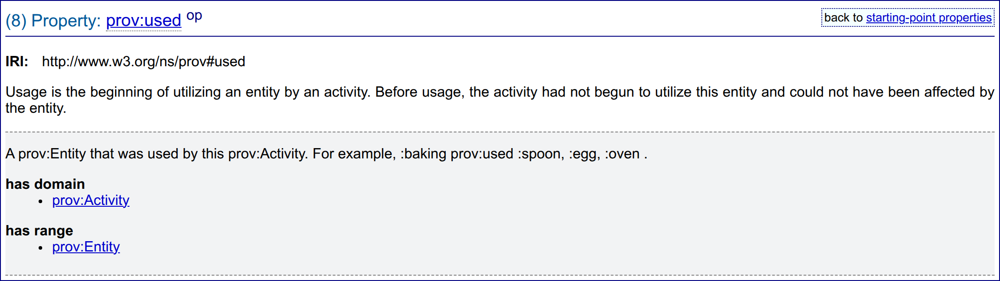
Domain: type van het subject · Range: type van het object
Standardisaties en modellen
Ontologie relaties als hulp ...
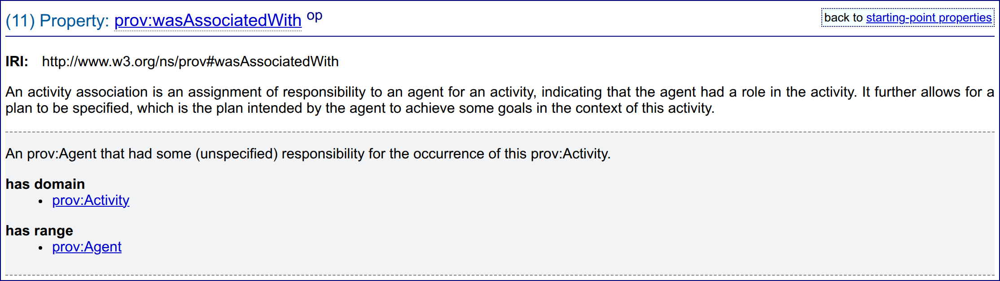
Domain: type van het subject · Range: type van het object
Standardisaties en modellen
Ontologie relaties als hulp ...
Standardisaties en modellen
Piramide
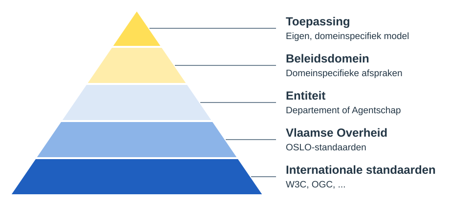
Standaardmodellen
Overzicht
| Vraag | Herbruikbaar model |
|---|---|
| Wat is gemeten, waarover en waarmee? | SOSA/SSN |
| Waar komt het rapport vandaan en wie was betrokken? | PROV-O |
| Welke stappen waren voorzien? | P-Plan |
| Wat betekenen onze begrippen en codes? | SKOS |
| Wie zegt iets over wat? | Web Annotations |
| Eenheden, grootheden en numerieke waarden | QUDT |
Standaardmodellen
SOSA/SSN
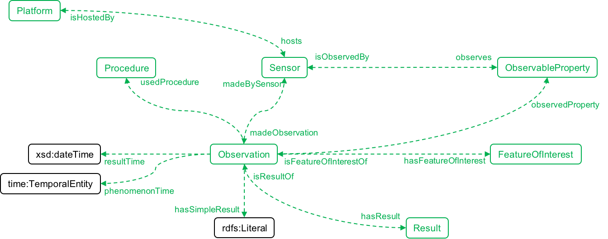
Standaardmodellen
PROV-O
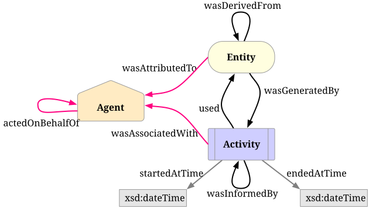
Standaardmodellen
P-Plan
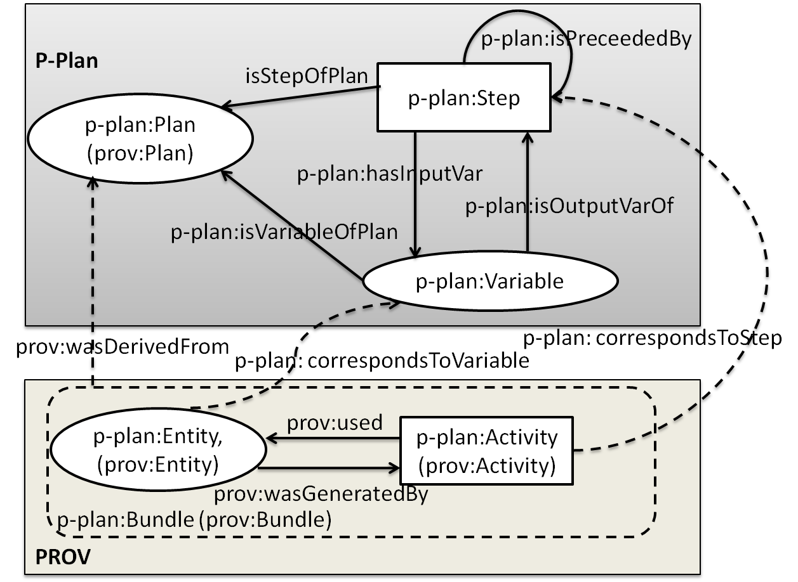
Standaardmodellen
SKOS
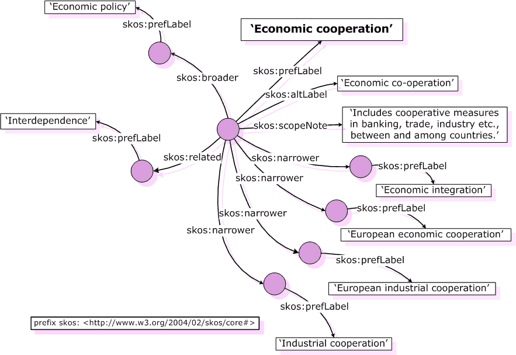
Standaardmodellen
Web Annotations
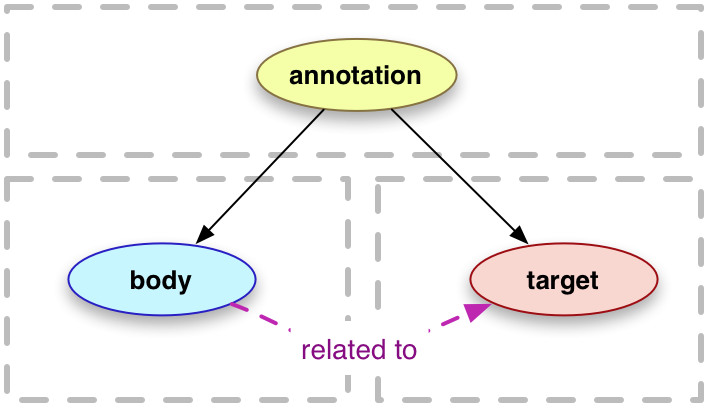
Workshop · kies het modelbegrip
Van waterstaal tot rapport
Een labo meet nitraat met een fotometer, plant kwaliteitscontrole en bewaart een PDF-rapport met een eigen versie-URI.
Kies voor elke situatie de best passende klasse voor de beschreven rol.
De opties bevatten Nederlandse vertalingen van officiële klassedefinities.
3 vragen · 3 minuten
claper.maximvdw.be/e/q6tdq
Workshop · de klassen
Wat betekenen de opties?
sosa:Sample: representatieve afspiegeling van een onderzoeksobject, waarop waarnemingen gebeuren.
sosa:Sensor: apparaat, agent of software die een waarneming uitvoert en een resultaat geeft.
sosa:ObservableProperty: een waarneembare eigenschap van een onderzoeksobject.
p-plan:Plan: een prov:Plan dat uit stappen bestaat die variabelen gebruiken en produceren.
p-plan:Activity: het uitvoeringsproces dat in een p-plan:Step gepland is.
p-plan:Step: een geplande uitvoeringsactiviteit.
prov:Entity: een fysiek, digitaal of conceptueel ding met vaste aspecten.
prov:Activity: iets dat in de tijd plaatsvindt en werkt op of met entiteiten.
prov:Agent: iets dat verantwoordelijk is voor een activiteit of entiteit.
Workshop · nabespreking
De rol bepaalt het begrip
| Onderdeel uit de casus | Klasse | Waarom? |
|---|---|---|
| Fotometer als meetapparaat | sosa:Sensor |
Voert de meetprocedure uit |
| Geplande kwaliteitscontrole | p-plan:Step |
Beschrijft een voorziene taak |
| Bewaarde rapportversie | prov:Entity |
Een digitaal object met vaste aspecten |
Wat verandert er als de kwaliteitscontrole echt uitgevoerd wordt?
Uitdagingen
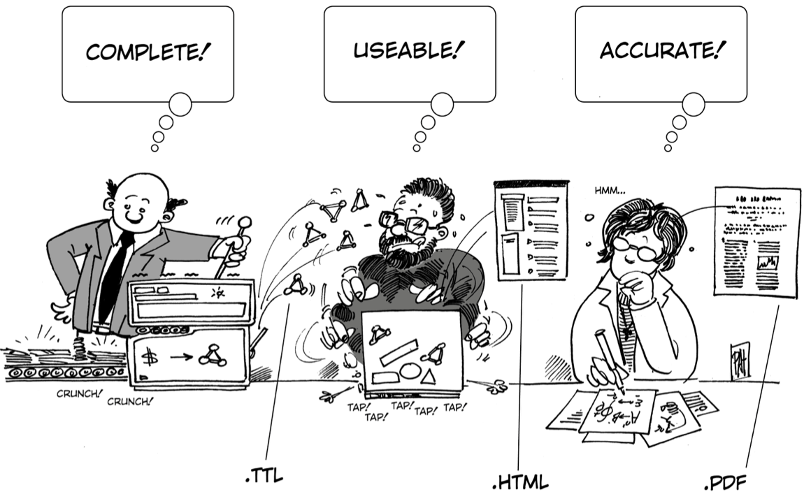
Tekening Patrick Hochstenbach
Welke uitdagingen ervaar jij bij gegevensuitwisseling?
Deel een uitdaging uit je eigen praktijk via het formulier in Claper.
Denk aan begrippen, techniek, samenwerking of beheer.
claper.maximvdw.be/e/q6tdq
Uitdagingen
Toekomstbestendigheid is (vaak) geen use case
Om interoperabiliteit te bereiken bij overheidsapplicaties moet je de problemen en use cases van vandaag oplossen en nadenken over de problemen en use cases van morgen.
... er is geen beloning vandaag voor het oplossen van toekomstige problemen.
Uitdagingen
Bijkomend analysewerk
Een bestaand model hergebruiken vraagt eerst inhoudelijke keuzes.
- Welke standaard past bij de betekenis van onze gegevens?
- Welke lokale afspraken en uitbreidingen zijn echt nodig?
- Wie betaalt de eerste uitwerking als anderen later mee profiteren?
Aanpak: budgetteer analyse en beheer; bewijs de meerwaarde met één concrete gegevensuitwisseling.
Uitdagingen
Complexiteit en overmodellering
Een standaard gebruiken betekent niet alles ervan implementeren.
- Generieke modellen vragen een vertaalslag naar de eigen werking.
- Extra abstracties maken ontwikkeling en uitleg moeilijker.
- Automatische afleidingen zijn alleen nuttig als je ze nodig hebt.
Aanpak: kies een klein profiel met concrete voorbeelden. Breid uit zodra een echte usecase dat vraagt.
Uitdagingen
Het gebruik van standaarden garandeert geen kwaliteitsvolle data
Een herkenbaar model is nog geen geldig meetrapport.
- Zijn resultaat, eenheid en meettijdstip aanwezig?
- Gebruiken we dezelfde types en afgesproken statusbegrippen?
- Zijn onze definities inhoudelijk echt gelijkwaardig?
Aanpak: maak afspraken toetsbaar, bijvoorbeeld met SHACL, en valideer bij invoer en uitwisseling.
Uitdagingen
Bestaande systemen en performantie
Linked Data verplicht je niet om je databank te vervangen.
- Bestaande applicaties hebben eigen modellen en koppelingen.
- Conversies, validatie en queries kosten rekentijd.
- Een extra publicatielaag vraagt synchronisatie en beheer.
Aanpak: migreer stapsgewijs, meet met echte workloads en gebruik gerichte API's of caching waar dat helpt.
Uitdagingen
Mensen, kennis en afhankelijkheden
Een werkende lokale oplossing vervangen voelt eerst als extra werk.
- Het team moet nieuwe begrippen en tools leren.
- Een eigen variant lijkt soms eenvoudiger dan gedeelde afspraken.
- Leveranciersafhankelijkheid verdwijnt niet door alleen RDF te gebruiken.
- Verwijzen naar andere applicaties is moeilijker als die zelf geen Linked Data aanbieden.
Aanpak: werk samen aan een kleine proef, deel voorbeelden en vraag overdraagbare modellen, data en mappings.
Uitdagingen
(Te) veel technische tools
- SPARQL
- LDES
- Triple stores (Virtuoso, Oxygraph, ...)
- SHACL
- ...
Aanpak: gebruik die tools alleen als je er nut in ziet. Zolang je datamodel interoperabel is, zijn je tools dat ook.
Om te onthouden
- Veel datamodellen zijn varianten van hetzelfde patroon
- Hergebruik bestaande standaarden in plaats van een eigen model
- Wanneer je geen bestaand patroon vindt breid je bestaande onderliggende standaarden uit
- Maak afspraken over hoe je de standaard toepast en gebruikt binnen je toepassing
- Standaarden gebruiken betekent denken over de toekomst
Meer leren over Linked Data
Knowledge Graphs - UGent
Gericht op industrie en de Vlaamse Overheid
https://www.ugain.ugent.be/MCKG2026.htm
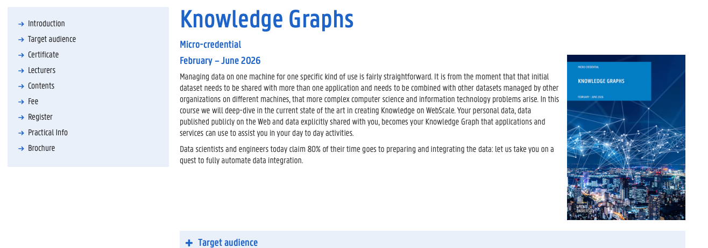
Meer leren over Linked Data ...
Naslagwerk SOSA/SSN in Vlaanderen
https://informatievlaanderen.github.io/OSLOthema-SSNSOSA-VL/
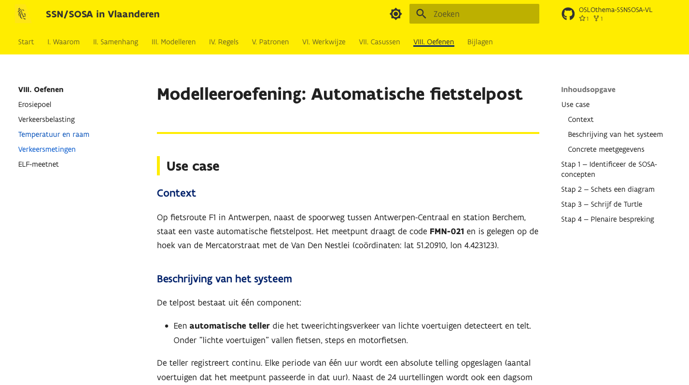
Vragen en feedback
- Stel je vragen via Claper, ook na de sessie
- Laat weten wat je meeneemt en wat je nog mist
claper.maximvdw.be/e/q6tdq